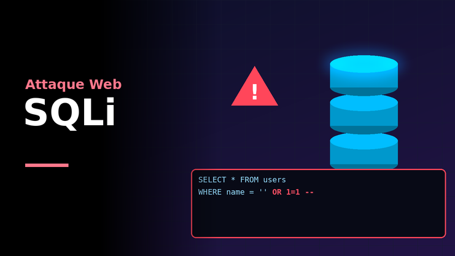
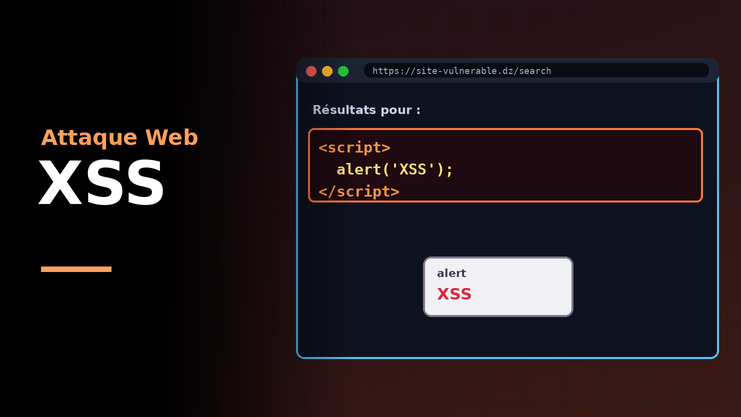
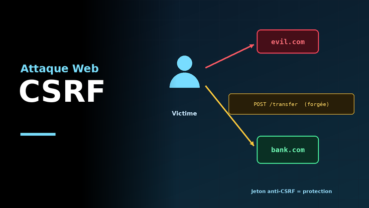
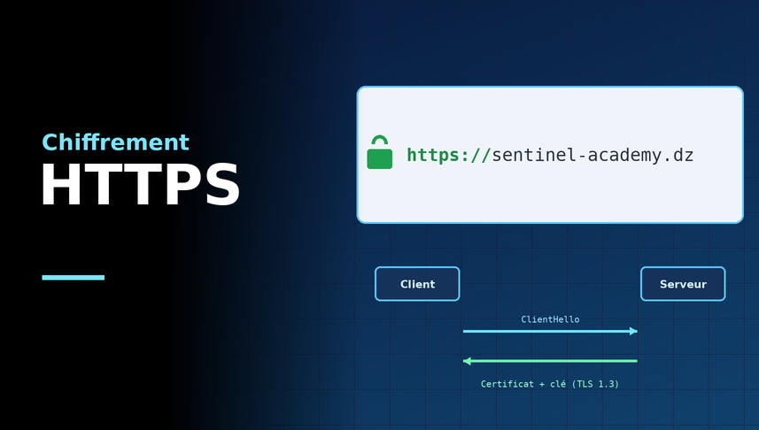
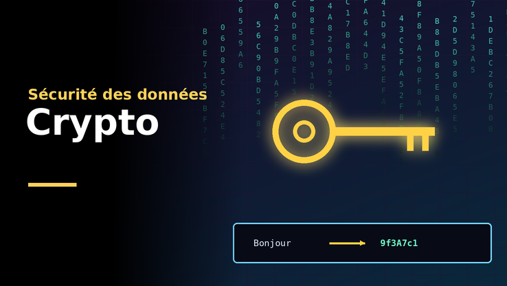
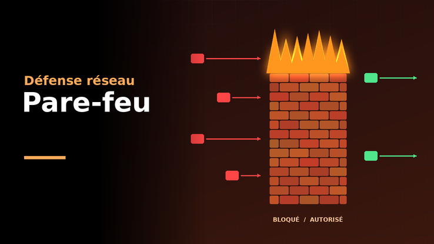
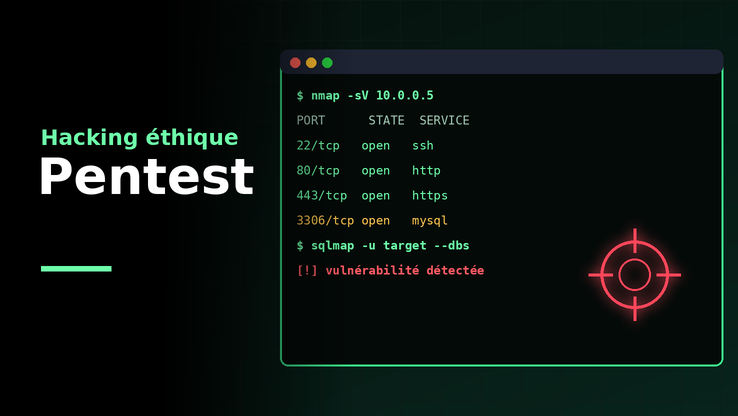
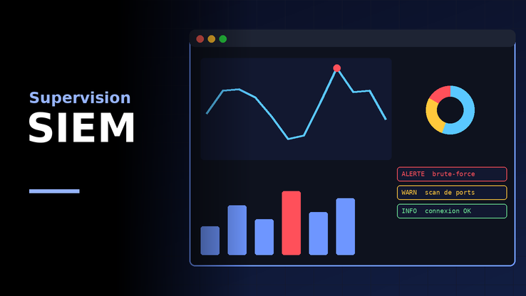

Cybersécurité Essentiel
Cybersécurité Essentiel réunit les outils et les bonnes pratiques pour détecter, analyser et neutraliser les menaces. Collaborez avec vos équipes et découvrez comment protéger vos systèmes et vos données.
CommencerBienvenue sur Sentinel, la plateforme d'apprentissage de la cybersécurité
Commencer
Découvrez comment les injections SQL exploitent les failles des formulaires et comment les prévenir avec des requêtes préparées.
Lire plus
Voyez comment les attaques XSS injectent du code malveillant dans les pages et comment s'en protéger par l'échappement des données.
Lire plus
Apprenez comment une attaque CSRF détourne la session d'un utilisateur et comment les jetons anti-CSRF la neutralisent.
Lire plus
Comprenez comment HTTPS et TLS chiffrent les échanges entre clients et serveurs pour garantir confidentialité et intégrité.
Lire plusCybersécurité Essentiel réunit les outils et les bonnes pratiques pour détecter, analyser et neutraliser les menaces. Collaborez avec vos équipes et découvrez comment protéger vos systèmes et vos données.
Commencer
Découvrez comment la cryptographie symétrique et asymétrique protège les données grâce au chiffrement, au hachage et aux signatures numériques.
Lire plus
Pare-feu et systèmes de détection d'intrusion filtrent le trafic réseau : surveillez, bloquez et alertez face aux activités suspectes.
Lire plus
Apprenez comment le pentest simule des attaques réelles avec Nmap, Burp Suite et Metasploit pour révéler les failles avant les pirates.
Lire plus
Voyez comment les SIEM centralisent les journaux et comment l'analyse forensique reconstitue un incident pour y répondre rapidement.
Lire plusSentinel Academy forme la nouvelle génération d'experts en sécurité web et réseau. Apprenez à concevoir, tester et défendre des systèmes qui protègent les données contre les menaces actuelles.
CommencerSuivez-nous: